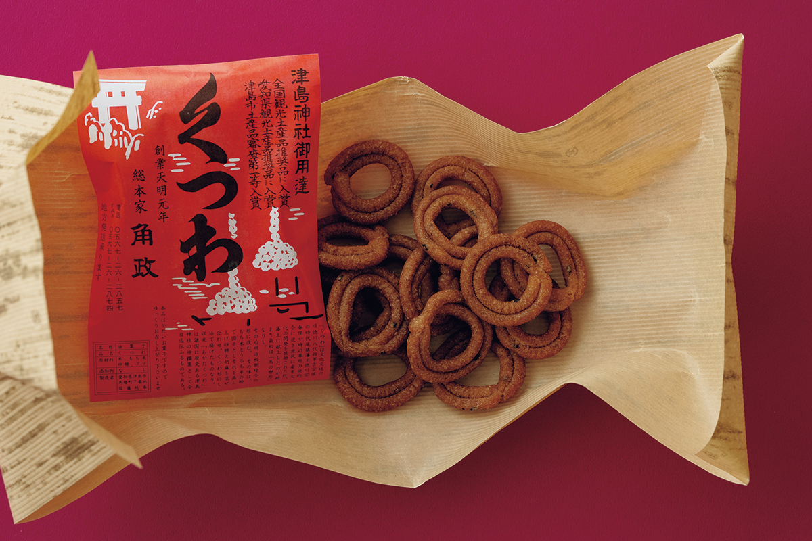
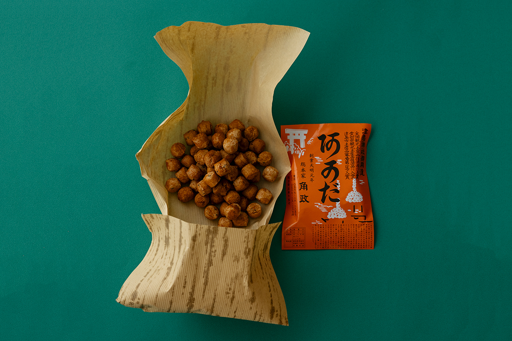
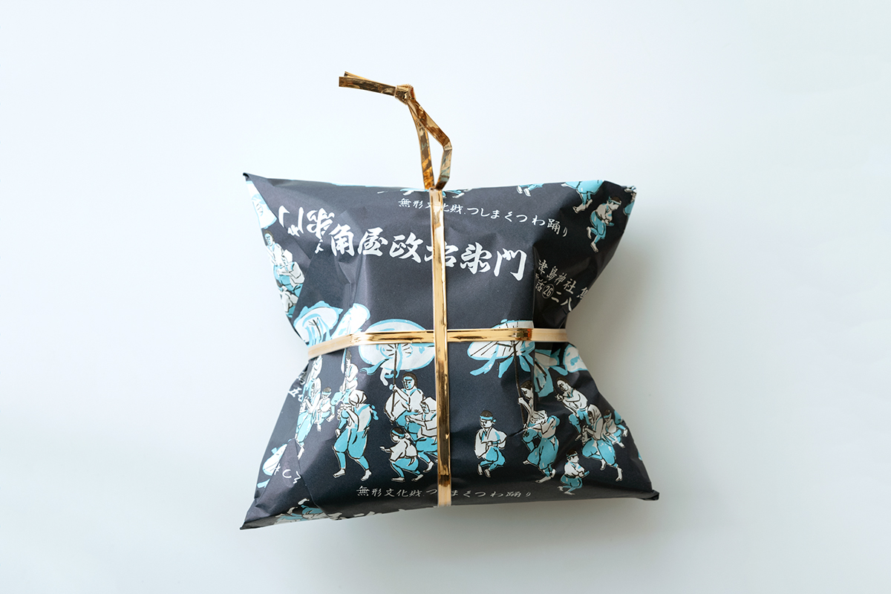
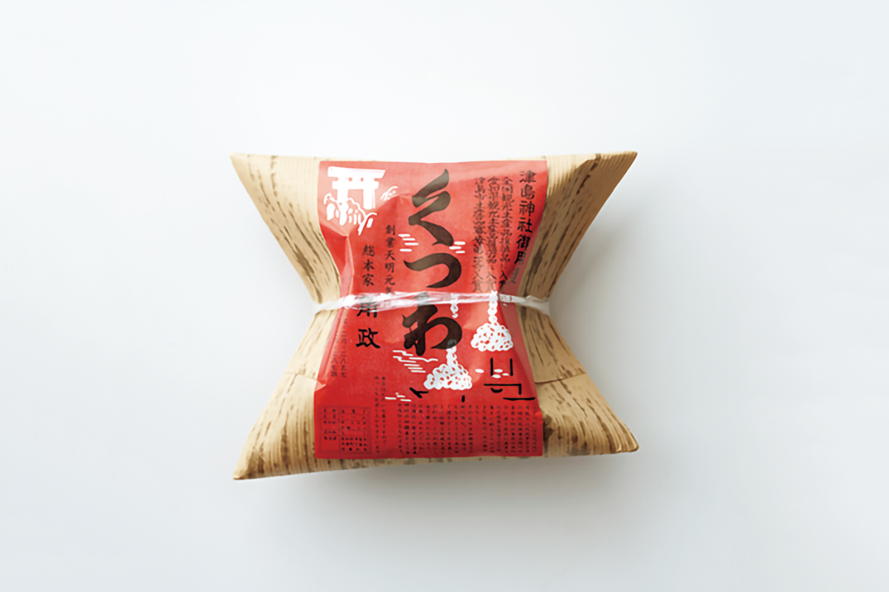
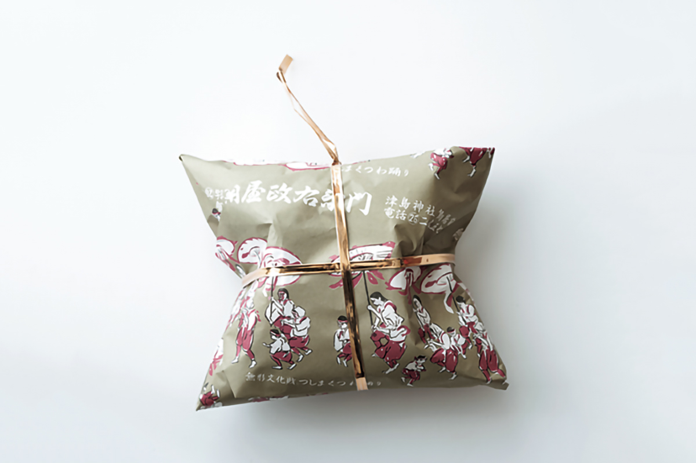
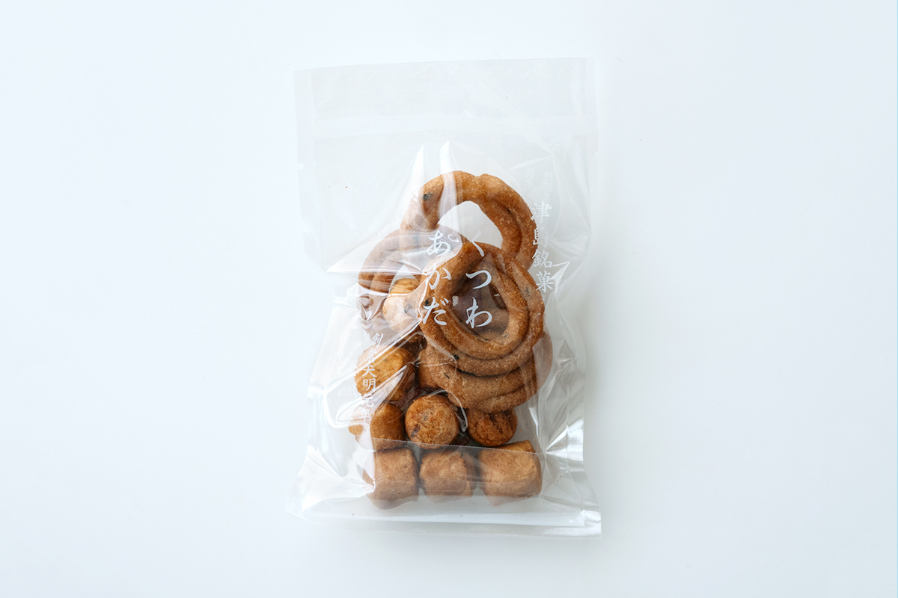

Префектура Айти · Цусима · сладости
«Куцува» и «акада»: жареные рисовые сладости у ворот святилища Цусима

У ворот святилища Цусима на западе префектуры Айти паломникам веками продают две простые сладости из рисовой муки. Кондитерская «Сохонкэ Какумаса» до сих пор держит их рядом на одном прилавке: кольца «куцува» и шарики «акада».
Место
Сладости у ворот святилища
Цусима это небольшой город на западе префектуры Айти. Его сердцем остаётся святилище Цусима с историей около 1450 лет, и вокруг него давно сложилась улица лавок для паломников. Сладости, которые продают у ворот святилища, в Японии называют «мондзэн-гаси», сладости у храмовых ворот.
Кондитерская «Сохонкэ Какумаса» как раз из таких. Её «акада» и «куцува» продаются в паре, как две половинки одного целого. Обе сладости связаны со святилищем: «акада» подносят богам, а «куцува» считается сладостью на удачу и счастье.
Исследовательница традиционных сладостей, которая много лет ищет связь японских сладостей с народным ремеслом, видит в них живое воплощение идей «мингэй», движения за красоту простых вещей ручной работы.
«Сладость это еда, а мингэй это ремесло, я это прекрасно понимаю. И всё же в рецептах и вкусе некоторых сладостей живёт сама суть мингэй. Много этапов ручной работы, ровно столько движений, сколько нужно, и такая простая, до предела отточенная форма, что легко представить, как мастер работал, ни о чём не думая»
исследовательница традиционных сладостей
Акада
Шарики, которые лечили от мора

«Акада» называют одним из предков японских сладостей: это рисовые шарики, обжаренные в масле. Каждый размером около двух сантиметров, и в этой круглой форме нечего ни убавить, ни прибавить.
Предание связывает «акада» с монахом Кукаем (774–835), которого в Японии почитают под именем Кобо Дайси. Он учился в Китае, а вернувшись, основал буддийскую школу Сингон. По легенде, Кукай сделал жареные шарики из риса, поднесённого святилищу Цусима, положил их перед алтарём и раздал паломникам, и болезнь, ходившая по округе, отступила. Само название, как говорят, пришло из санскрита: словом «агада» называли средство от всех болезней.
Ещё с эпохи Хэйан (794–1185) «акада» подносят богам святилища Цусима как оберег от мора. Шарики приятно твёрдые и хрустящие, они хорошо идут к чаю: остановиться трудно.

Куцува
Кольца, похожие на удила
Рецепт «куцува» прост. Муку из обычного и клейкого риса пропаривают, смешивают с сахаром и кунжутом, отбивают в тесто моти, скатывают жгутики, сворачивают их в кольца и жарят в масле. Кольца выходят красивыми и хорошо прожариваются, а по форме напоминают прародителя пончика. Вкус поджаристый, и исследовательница признаётся, что незаметно для себя съела целый пакет.

Жареные кольца, по преданию, появились благодаря Мунэхару Токугаве (1696–1764), седьмому правителю княжества Овари. В годы, когда сёгунат требовал от всех строгой бережливости, он пошёл против указа и поощрял среди простых людей ремёсла и культуру. Форму колец взяли у обряда «тинова-кугури» в святилище Цусима: люди проходят сквозь большое кольцо из травы и просят здоровья на весь год. А название сладость получила за сходство с конскими удилами, по-японски «куцува».
Вкусно и к тому же на удачу. Почувствовать идеи мингэй, по словам исследовательницы, проще всего на языке: стоит попробовать, как хрустят эти кольца.


«Сохонкэ Какумаса»
- Адрес
- префектура Айти, Цусима, Баба-мати, 7
- Телефон
- +81 567-26-2857
- Часы работы
- 8:00–19:30
- Выходные
- вторая и четвёртая среда месяца
Фото: Вакана Баба.